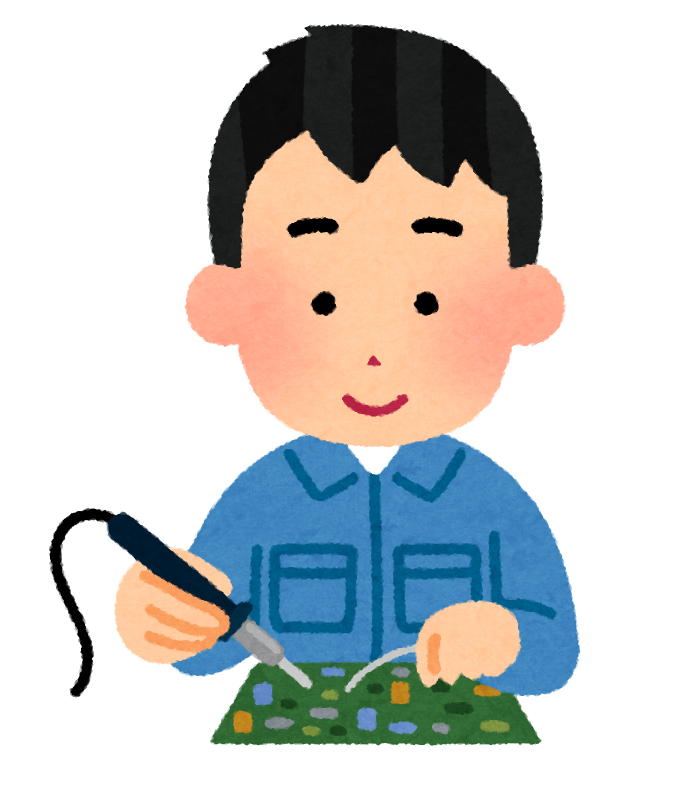
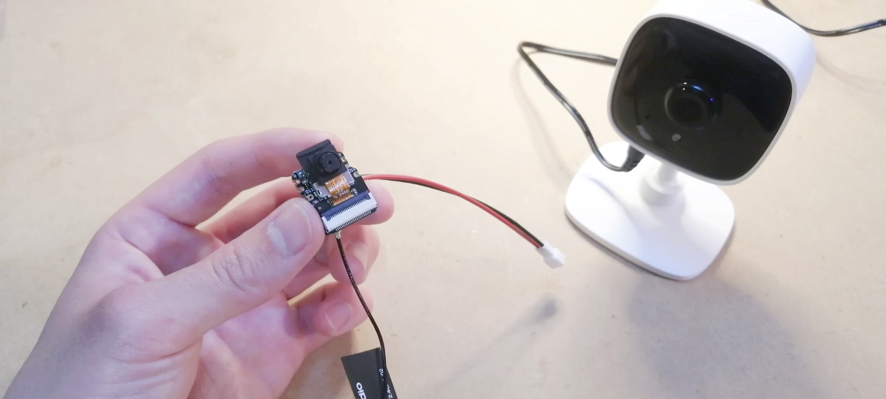
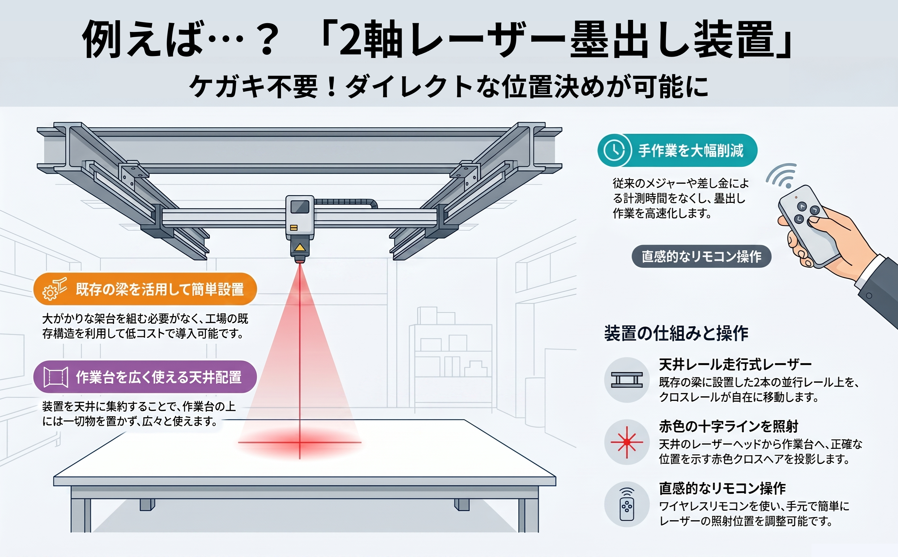
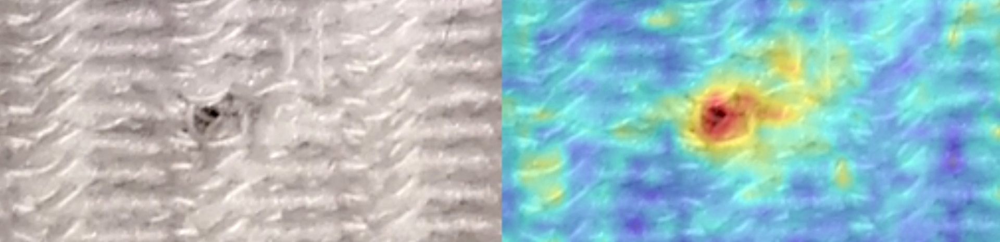

こんなお困りごと、ありませんか？
- ちょっとした改善をしたいけど、相談先がない
- 相談したいけど、IT用語ばかりで話が通じないのは嫌だ
- 大手に頼むと費用が心配。まずは小さく試したい
- 現場の人材不足により、新規技術を導入できない
- 作業を自動化したいけど、どこから手を付けていいかわからない
- 効果不明な技術にいきなり高額な投資をしたくない
- 新規技術の導入時に現場と対立したくない
IoT/AI技術の導入支援、小規模自動化の試作開発、DX伴走、IoT人材教育ほか
当室は「人材不足」「技術導入の遅れ」「現場への導入障壁」「予算の制約」「課題や解決方法の不透明さ」といった中小製造業の抱える諸問題を、小さな改善から解決することを支援しています。
ハードウェア、ソフトウェア、AIを一気通貫で対応できですので、複数社との面倒なやり取りはもう要りません。
また、業種を問わず、現場の課題に合わせて柔軟にご対応します。


マイコンを活用したスピーディーな試作・導入のステップです。
「こんなことできる？」という軽い相談でOK。現場の環境や見たいデータをお伺いします。
マイコンを活用した「安く・早く」実現できる最適な構成をご提案します。
まずは動くものを製作。当室でプログラム開発とセンサーの選定を行います。
実際に現場に仮設置し、データの精度を確認。現場に合わせた微調整を繰り返します。
本格運用スタート！導入後の「もっとこうしたい」にも柔軟に対応します。

課題検査員の熟練度で判定がバラつき、見落としリスクが不安。教育にも時間がかかる。
解決策カメラを増設し、Pythonによる独自のAI判定モデルを構築・導入。
効果検査時間を大幅に削減。判定基準を数値で一定化し、新人でも即戦力となる体制を実現。
課題市販のIoT機器は多機能すぎて高価。また、現場の狭いスペースに設置できる治具がない。
解決策必要な機能だけに絞った独自マイコン基板を設計。3Dプリンタで現場にジャストフィットする専用筐体を製作。
効果導入コストを大幅に削減。磁石やフックで「ポン付け」できる手軽さで、現場へのスムーズな定着を実現。
課題24時間稼働の現場で、夜間や休日の異常検知が遅れ、過去に大きなロスが発生。
解決策無線センサーを後付けし、スマホへの自動通知システムを構築。
効果定期巡回が不要になり、異常時は即座にスマホへ通知。設備停止による損失を最小限に。
課題不良品が出ても原因が「不明」のまま。現場の勘頼みの調整で再現性がない。
解決策電流・振動センサーで設備の「健康状態」をグラフ化。
効果故障の前兆や不良発生時の条件を特定。属人的な管理から、データに基づく品質管理へ転換。
課題現場の紙日報をExcelに転記したり、大量のPDFから請求データを作る作業で、本来の管理業務が圧迫されている。
解決策複雑なExcel操作やPDF読み取りを自動化する、専用のPythonプログラムを開発。
効果毎月3日間かかっていた集計作業を「ボタン一つ」で完了。ミスがゼロになり、事務所スタッフが他業務に注力できる体制へ。

| サービスとその内容 | こんなお客様におすすめ | 料金目安 |
|---|---|---|
|
🔧 現場データの見える化支援
現場にセンサーを設置し、データの収集・処理・可視化までを一貫して支援します。 |
・何から始めればいいかわからない ・見える化したい/データを蓄積したい |
50万円 |
|
🤝 現場DX・内製化支援プログラム
現場担当者向けに、座学と実技を組み合わせた8時間のカリキュラムで教育を行います。 |
・IoT人材を育てたい ・現場から主体的に行動してもらいたい ・DXで現場から会社を変革していきたい |
15万円 |
|
🔧 エッジデバイスの試作
AI処理を組み込んだエッジデバイスの試作を行います。現場でセンサデータや画像データを自律的に処理し、即時の判断や制御が可能です。 |
・作業を自動化したい ・AI技術を導入したい ・オフラインで処理したい |
- |
|
🔧 小規模自動化装置の試作
マイコンを用いて、バルブやスイッチなどの操作を自動化する小規模装置を試作します。 |
・作業を自動化したい ・現場の人手不足を解消したい |
- |
|
📊 技術検証（IoT）
見える化やデータ蓄積などのIoT技術について、本格導入前に効果を検証いただけます。 |
・新規技術を導入したいが、いきなりの高額投資はリスクが大きい | 15万円 |
|
📊 技術検証（AI）
画像認識や異常検知などのAI技術について、本格導入前に効果を検証いただけます。 |
・新規技術を導入したいが、いきなりの高額投資はリスクが大きい | 30万円 |
|
🔧 筐体・治具設計
3DCADを用いて、目的や使用環境に合わせた部品の設計を行います。 |
・設計を外注したい ・3Dデータのみ必要 |
- |
|
🔧 3Dプリンタ造形
樹脂素材による3Dプリント造形を行います。 |
・試作用の部品を安く作りたい ・短納期で部品が欲しい |
- |
|
🔧 PC作業の自動化
Excelなどを使った定型業務を自動化し、作業効率を向上させます。 |
・事務作業を小さく改善したい | 20万円 |
|
🤝 スポット相談
ちょっとした技術的な疑問や方向性の確認などを、対面でご相談いただけます。 |
・課題が曖昧であったり、どの技術を使えばいいかわからない | 3万円/2h |
|
🤝 技術顧問
IoT導入やDX推進を、定期的な面談を通じて伴走支援します。 |
・定期的なサポートが欲しい ・技術選定や現場改善、補助金申請等をまとめて頼みたい |
- |
✔ これらの価格は今後変動する可能性があります。
✔ 価格の記載のないサービスは、お客様ごとの見積もりとなります。お気軽にお問い合わせください。
温度と湿度をリアルタイムに取得し、ダッシュボードで可視化しています。
他にも振動や電流等のあらゆる値を取得でき、データを見える化・蓄積できます。
DXに向けての"はじめの一歩"としていかがでしょうか？
例として、ボルト/ナット/ワッシャをリアルタイムに検出と判別をしています。
実装コストは低めで、比較的簡単に導入することができます。
例として、錠剤の不良箇所を検出しています。
不良品のデータを集めるのが難しい場合でも、導入することができます。
例として、布製品の不良箇所を検出しています。
モノの形だけでなく、布目や木目といったパターン模様についても検査することができます。
電子機器を収納するための筐体を3DCADで設計し、3Dプリンタで部品を造形しています。
設計のみ/造形のみのご依頼も承ります。また、超短納期も対応可能です。
準備中です…
※ 動画は順次追加予定です。こんなデモ動画が観たい！というリクエストも大歓迎です😆
課題は明確でなくても構いません。こんなのできる？も歓迎します。
お気軽にご相談ください。
※ お問い合わせの際には、以下の項目を含めて頂けるとスムーズです。
・貴社の課題、あるいはお困りごと
→ 導入したい技術が明確である場合には、その技術と導入対象の詳細を教えてください。
・導入までの大まかなご希望スケジュール
・予算感
・現場見学の可否
メール：ometechlab@gmail.com (代表 佐藤まで)
電話：ご発注いただいたお客様のみの対応となります。